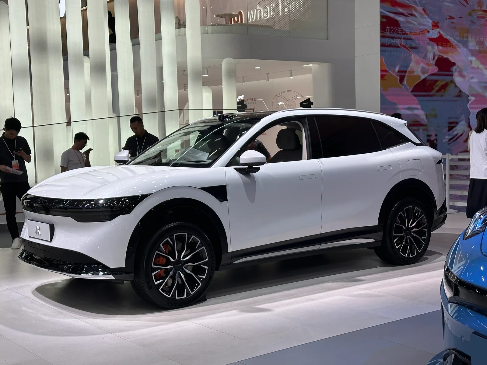
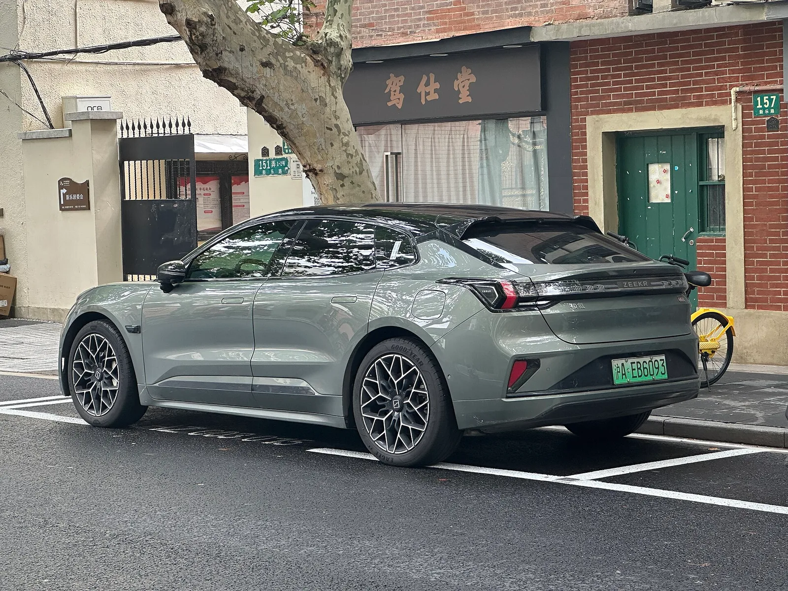
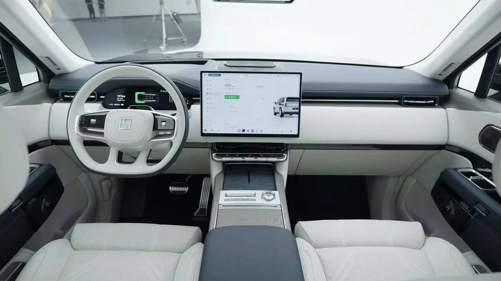

▲ 지커 7X의 글로벌 누적 주문이 20만 대를 넘어섰다 ⓒ Zeekr
국내에서 지커 7X는 라이다가 빠진 사양으로 들어왔고, 보조금도 받지 못했습니다.
그래서 국내 기준으로만 보면 조용한 차입니다.
그 사이 글로벌 누적 주문은 20만 대를 넘었습니다. 판매 국가는 50개국 이상입니다.
1. 20만 대라는 숫자
| 항목 | 내용 |
|---|---|
| 누적 주문 | 20만 대 이상 |
| 판매 지역 | 50개국 이상 |
| 1~7월 인도 | 6만 2,865대 |
| 지커 브랜드 내 비중 | 29.35% |
마지막 줄이 이 차의 위치를 설명합니다. 지커 브랜드 전체 판매의 약 30%를 7X 한 대가 담당하고 있습니다.
2024년 9월 20일 중국 출시 이후 약 2년 만의 기록입니다.
2. 왜 멕시코였나
20만 번째 주문이 나온 곳은 멕시코입니다. 고객 이름은 호아킨 에스쿠라(Joaquín Ezcurra)로 공개됐습니다.
우연은 아닙니다. 지커 7X는 1~7월 멕시코 럭셔리 순수전기 C-SUV 부문에서 1위를 기록했습니다.
📍 중국 전기차에게 멕시코가 갖는 의미
멕시코는 미국행 관세 장벽 밖에 있으면서도 구매력이 있는 시장입니다. 미국 진출이 막힌 중국 브랜드에게 북미 인근에서 가장 현실적인 거점이 됩니다. 지커뿐 아니라 BYD, MG 등이 같은 이유로 이 시장에 집중해 왔습니다.
| 순서 | 시장 |
|---|---|
| 1 | 중국 본토 (2024년 9월) |
| 2 | 스웨덴 · 노르웨이 · 네덜란드 |
| 3 | 홍콩 · 호주 · 태국 |
| 4 | 멕시코 |
북유럽부터 시작한 것도 계산입니다. 전기차 보급률이 높고 브랜드 진입 장벽이 상대적으로 낮은 시장을 먼저 뚫는 방식입니다.

▲ 지커 7X는 브랜드 전체 판매의 약 30%를 담당한다 ⓒ Zeekr
3. 개선 모델이 들고 나온 것
2025년 10월 28일 중국에서 개선 모델이 나왔습니다. 여기 들어간 사양이 이 차의 경쟁력을 설명합니다.
| 항목 | 내용 |
|---|---|
| 전압 구조 | 900V 고전압 아키텍처 |
| 센서 | 라이다 기본 |
| 연산 | 엔비디아 드라이브 토르-U 기본 |
| 최고 출력 | 듀얼모터 585kW (785마력) |
| 0-100km/h | 2.98초 |
| 배터리 | 103kWh CATL 기린 |
| 주행거리 | CLTC 802km |
| 충전 | 10 → 80% 10분 |
| 시작 가격(중국) | 22만 9,800위안 (약 4,700만 원 상당 · 2026년 8월 21일 환율 1,386.5원 기준) |
📍 CLTC 802km는 그대로 받아들이면 안 됩니다
CLTC는 중국 기준 측정 방식으로, 국내 환경부 인증이나 유럽 WLTP보다 후하게 나오는 경향이 있습니다. 실사용 기준으로는 상당한 차이가 생깁니다. 반면 10→80% 10분은 900V 구조에서 실제로 가능한 영역입니다.
4. 그런데 국내 사양은 다릅니다
여기서 국내 이야기로 돌아옵니다.
국내에 들어온 지커 7X는 라이다가 빠진 사양이며, 전기차 보조금 지급 대상에서도 제외됐습니다. 이 내용은 지커 7X 가격·제원 총정리에서 자세히 다룬 바 있습니다.
| 구분 | 글로벌(중국 개선 모델) | 국내 |
|---|---|---|
| 라이다 | 기본 | 미적용 |
| 보조금 | 해당 없음 | 미지급 |
같은 이름의 차라도 시장마다 다른 물건이 됩니다. 해외 판매 기록을 국내 구매 판단에 그대로 대입하기 어려운 이유입니다.

▲ 지커는 7X 위로 9X까지 라인업을 넓히고 있다 ⓒ Zeekr
5. 이 기록이 산업에 갖는 의미
중국 전기차의 수출 방식이 바뀌고 있다는 신호입니다.
✅ 세 가지 변화
· 저가 공세가 아닙니다 — 22만 9,800위안은 중국 기준 중상위 가격대입니다
· 기술로 팔고 있습니다 — 900V, 라이다, 엔비디아 칩이 기본입니다
· 50개국 분산 — 특정 시장 의존도를 낮추는 구조입니다
· 미국 없이도 20만 대 — 최대 시장을 빼고 만든 숫자입니다
마지막 항목이 특히 중요합니다. 미국 시장이 사실상 닫혀 있는 상태에서 나온 기록이기 때문입니다.

▲ 지커는 유럽 북부부터 진입해 시장을 넓히는 방식을 택했다 ⓒ Wikimedia Commons

▲ 지커는 실내 사양에서도 프리미엄 지향을 분명히 하고 있다 (사진은 9X) ⓒ Zeekr
6. 정리
지커 7X의 글로벌 누적 주문이 20만 대를 넘었습니다. 50개국 이상에서 판매되며, 20만 번째 주문은 멕시코에서 나왔습니다. 1~7월 인도는 6만 2,865대로 지커 브랜드 판매의 29.35%를 차지합니다.
개선 모델은 900V 구조에 라이다와 엔비디아 드라이브 토르-U를 기본 적용했습니다. 최고 사양은 785마력에 0-100km/h 2.98초, 103kWh 기린 배터리로 CLTC 802km, 10→80% 충전 10분입니다.
다만 국내 사양은 라이다가 빠졌고 보조금도 받지 못합니다. 같은 이름이라도 시장에 따라 다른 차라는 점을 감안해야 합니다.